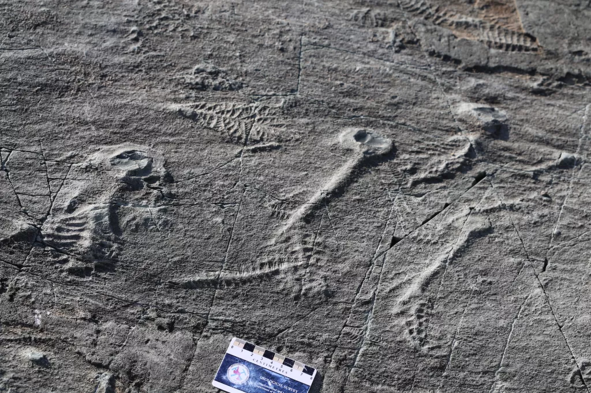

Acient Social Networking?
May 16, 2020
This 500 million-year-old 'social network' may have helped sea monsters clone themselves
Rangeomorphs had no mouths, guts, arms, legs or reproductive organs, but an ancient "network" of strings may have helped them dominate the ocean floor anyway. Some of the earliest animals on Earth may have used social networks to chat with each other, review food — and yes — maybe even sext. (See: communicate with each other, share nutrients and possibly reproduce.)
In a study published Thursday (March 5) in the journal Current Biology, researchers looked at hundreds of rangeomorphs — bizarre, fern-like animals that lived in large colonies on the bottom of the ocean from about 571 million to 541 million years ago — fossilized along the coast of Newfoundland, Canada. To the team's surprise, many of the fossil specimens appeared to be connected to each other by long, string-like filaments never seen among animals this old. Individual filaments spanned anywhere from a few inches to 13 feet (4 meters) in length and connected rangeomorphs from seven different species, forming what lead study author Alexander Liu called a primitive "social network" of deep-sea dwellers.
These organisms seem to have been able to quickly colonize the seafloor, and we often see one dominant species on these fossil beds," Liu, a professor at the University of Cambridge's Department of Earth Sciences, said in a statement. "These filaments may explain how they were able to do that."Rangeomorphs are thought to be some of the earliest nonmicroscopic animals on Earth, spreading prolifically during the end of the Ediacaran period (roughly 635 million to 541 million years ago) despite having no noticeable mouths, guts, reproductive organs or means of moving around.
Scientists think the creatures dug into the mud on the ocean floor, passively sucking nutrients out of the water using symmetrical, leaf-like branches. Their methods worked well, apparently, as rangeomorph colonies dominated huge plots of the seafloor for 30 million years. Different species ranged from less than 1 inch (0.02 m) to 6.5 feet (2 m) in length, and some may have physically changed shape to better capitalize on the nutrients available around them. You could reasonably call rangeomorphs the "mighty morphin' flower rangers" of the Ediacaran and annoy only a few scientists in the process.
Because rangeomorphs never really moved around, the fossil record includes entire colonies of the creatures preserved as they actually lived. When Liu and his colleagues found fossilized filaments connecting rangeomorphs at 38 different dig sites, it became clear that this sinewy "network" played an important role in connecting individual colony members.
That role, however, remains a mystery. The filaments may have helped stabilize colony members against strong currents, the authors hypothesized, making each colony into a sort of living picket fence. Perhaps the filaments were used to transfer nutrients from animal to animal, sort of how trees connected at the roots can share resources today. Or perhaps the links were a tool for clonal reproduction, a type of asexual reproduction where the parent organism creates multiple identical clones of itself. This would have allowed rangeomorphs to spread across large sections of the seafloor very rapidly, the authors wrote. Further study of rangeomorph fossils is required to unravel the mystery of these filaments; alas, it seems this social network is password-protected.
In a study published Thursday (March 5) in the journal Current Biology, researchers looked at hundreds of rangeomorphs — bizarre, fern-like animals that lived in large colonies on the bottom of the ocean from about 571 million to 541 million years ago — fossilized along the coast of Newfoundland, Canada. To the team's surprise, many of the fossil specimens appeared to be connected to each other by long, string-like filaments never seen among animals this old. Individual filaments spanned anywhere from a few inches to 13 feet (4 meters) in length and connected rangeomorphs from seven different species, forming what lead study author Alexander Liu called a primitive "social network" of deep-sea dwellers.
Scientists think the creatures dug into the mud on the ocean floor, passively sucking nutrients out of the water using symmetrical, leaf-like branches. Their methods worked well, apparently, as rangeomorph colonies dominated huge plots of the seafloor for 30 million years. Different species ranged from less than 1 inch (0.02 m) to 6.5 feet (2 m) in length, and some may have physically changed shape to better capitalize on the nutrients available around them. You could reasonably call rangeomorphs the "mighty morphin' flower rangers" of the Ediacaran and annoy only a few scientists in the process.
Scientists think the creatures dug into the mud on the ocean floor, passively sucking nutrients out of the water using symmetrical, leaf-like branches. Their methods worked well, apparently, as rangeomorph colonies dominated huge plots of the seafloor for 30 million years. Different species ranged from less than 1 inch (0.02 m) to 6.5 feet (2 m) in length, and some may have physically changed shape to better capitalize on the nutrients available around them. You could reasonably call rangeomorphs the "mighty morphin' flower rangers" of the Ediacaran and annoy only a few scientists in the process.
Further study of rangeomorph fossils is required to unravel the mystery of these filaments; alas, it seems this social network is password-protected.
Rangeomorphs had no mouths, guts, arms, legs or reproductive organs, but an ancient "network" of strings may have helped them dominate the ocean floor anyway. Some of the earliest animals on Earth may have used social networks to chat with each other, review food — and yes — maybe even sext. (See: communicate with each other, share nutrients and possibly reproduce.)